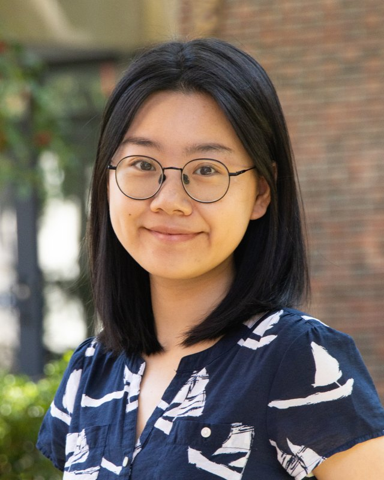

→ ABOUT ME
个人介绍

韩天雯，美国密西西比大学（University of Mississippi）现代语言系中文讲师，任教于该校中文领航项目（Chinese Language Flagship Program），同时在该校攻读应用语言学博士学位（预计 2028 年毕业）。本科与硕士分别毕业于上海师范大学（2019）和华东师范大学（2022），专业均为汉语国际教育。
此前曾任博敦大学（Bowdoin College）亚洲研究系访问讲师（2023–24）、密西西比大学访问中文教师（2022–23）、威廉大学（Williams College）亚洲语言文学与文化系中文教学实习生（Language Fellow，2021–22），并任教于明德大学（Middlebury College）中文暑校（2020–2022）和弗吉尼亚大学上海暑期项目（2019）。自 2023 年起，任教于密大中文领航项目暑期强化课程。
教学
- 教学范围：一年级至 500 级各级别课程，含强化课程、暑期沉浸式课程、内容型与专门领域中文课程。
- 教学方法：以体演文化教学法（Performed Culture Approach）为基础，采用项目式与社区参与式学习，设计表现性总结评估。
- 课程调整：通过学期初问卷和期中一对一面谈了解学生需求并调整教学；在混合班中为继承语学习者设计差异化任务。
教授课程
学术报告
- 2026
科技与中文教学国际研讨会（TCLT），线上
Designing a Generative AI Reading Coach to Scaffold L2 Chinese Discourse Comprehension: A Design-Based Study
- 2026
“桥梁”2026 中文应用与职业教育国际交流大会，哥伦比亚大学
从词汇积累到专业表达：任务链驱动的“中文+职业与专业领域”教学创新实践
- 2026
全美中文教师学会（CLTA）年会，罗德岛大学
在情境共演中记忆未来：低年级中文课堂的口语测试
- 2026
全美中文教师学会（CLTA）年会，罗德岛大学
在初级听说课中构建学生对行为文化的记忆
- 2025
全美中文教师学会（CLTA）年会，纽约
体演法律谈判：专门领域课程对学生专业知识的培养
- 2024
密西西比州外语教师协会（MFLA）年会，哈蒂斯堡
Teaching Intermediate to Advanced Chinese Using the Animated Short Film Bao
- 2024
全美中文教师学会（CLTA）年会，圣路易斯
Strategies for Teaching Intercultural Communication in Beginning and Intermediate Chinese Classrooms
- 2021
香港教育大学，线上
高级汉语综合教材书面语词语考察分析
发表
- 韩天雯（2025）。体演法律谈判：专门领域课程对学生专业知识的培养。“体演文化教学法”微信公众号。
- 韩天雯（2023）。利用动画短片《包宝宝》教中高级汉语｜教学设计。“体演文化教学法”微信公众号。
- 韩天雯（2021）。高级汉语综合教材书面语词语考察分析——以《新视角高级汉语教程》《焦点中国：高级汉语综合教程》为例。In International Forum of Chinese Textbook Design Academic Conference Proceedings (pp. 205–217). Hong Kong: Academic & Professional Book Centre Press.
荣誉
- 2026 “桥梁优秀实践与创新奖”，“桥梁”2026 国际交流大会（AAIEA，哥伦比亚大学）
- 2019–2020 研究生国家奖学金，中华人民共和国教育部（华东师范大学）
- 2019 全国汉语国际教育研究生教学技能大赛二等奖
专业发展
- PBLL Design Studio，Language Flagship Technology Innovation Center（CALICO 2025，圣地亚哥），2025
- 国际文凭（IB）教学证书，2022
About
Tianwen Han is Instructor of Chinese in the Chinese Language Flagship Program, Department of Modern Languages, University of Mississippi, and a Ph.D. student in Applied Linguistics there (expected 2028). She holds a B.A. (Shanghai Normal University, 2019) and an M.A. (East China Normal University, 2022) in Teaching Chinese to Speakers of Other Languages. She previously taught at Bowdoin College (Visiting Chinese Lecturer, 2023–24), the University of Mississippi (Visiting Chinese Instructor, 2022–23), Williams College (Language Fellow, 2021–22), the Middlebury Chinese School, and UVA-in-Shanghai.
She teaches Chinese from first-year through 500-level courses, including intensive and summer immersion programs and content-based courses in media Chinese, literature, Classical Chinese, and domain-specific Chinese. Her teaching draws on the Performed Culture Approach, project-based and community-engaged learning, and performance-based assessment. Her research focuses on computer-assisted language learning, L2 Chinese reading, and second language assessment.